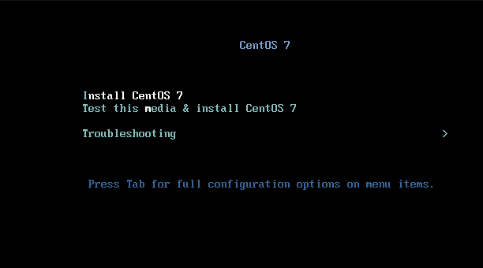
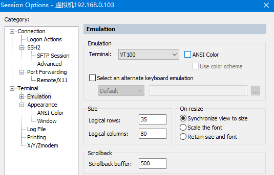

Linux下的软件安装
环境与文件准备
虚拟机软件: VMware 15.5.1
终端软件: SecureCRT
JDK: 1.8.0_144
Tomcat: 8.5.53
MySQL: 5.7.29
VMware下安装CentOS 7.7
- 安装后启动VMware，点击左上角文件 -> 新建虚拟机
- 选择[自定义]

- 根据Workstation版本进行选择
4.[稍后安装操作系统]
- 选择Linux操作系统，版本为CentOS 7 64位
- 填写虚拟机名称和路径
- 设置处理器数量为2，每个1核
- 设置虚拟机内存
- 设置网络连接 -> 使用桥接网络
- 选择I/O控制器和磁盘类型 ，默认推荐类型即可
- 选择创建新的虚拟磁盘
- 选择磁盘容量，这里默认20G
- 虚拟机命名
- 到此基本参数已经设置完毕
- 退出页面，选择编辑虚拟机设置
- 选择CD/DVD选项，右边选择连接 -> 使用ISO映像文件（找到之前下载好的文件）
启动安装虚拟机了
鼠标点进工作区，使用上下键进行控制，选择第一项Install CentOS 7，按照提示静待安装

- 选择语言：简体中文
- 首先点进[网络和主机名]，右上角开启网络
- 进入[日期&时间]，关闭再重新开启，进行时间同步
- 进入[设备选择]，我要配置分区->选中本地标准磁盘，并添加
- 点击左下角加号添加分区

- 添加一个挂载点[swap]，期望容量[1024 MB]
- 同样添加挂载点[/boot]，容量[1024 MB]
- 剩下空间全部分配给[/]
文件系统可以默认，
swap->swap,/root->xfx选择[接受更改]
- 设置root用户的密码
- 设置ROOT好密码之后自动就开始安装了
- 安装后输入用户名（root）和密码，成功进入虚拟机
使用SecureCRT连接虚拟机
- 点击左边菜单栏session manager->new session
- 协议默认为SSH2
- 虚拟机上输入
ip addr查看其ip地址，填入hostname中
- 虚拟机名称
- 一个新的session建立成功
- 右键 -> 虚拟机名称 -> connect terminal 建立连接
- 选择 Accept&save
- 输入用户名（默认设置的root账号），填写密码
- 登录成功
- 设置显示格式
菜单栏 options -> Session Options
Emulation -> 勾选右侧ANSI color

Appearance -> 设置Character encoding -> UTF-8
此时看到页面颜色已经改变，可以正常进行操作了
Linux下安装配置JDK
首先使用yum安装插件，然后就可以正常使用rz、sz命令上传、下载数据了
1
yum -y install lrzsz选择从桌面上传文件，选择下载好的JDK压缩包 -> Add -> Ok
1
rz
解压
1
tar -zxvf jdk-8u144-linux-x64.tar.gz编辑文件
1
vi /etc/profile尾行插入
1
JAVA_HOME=/usr/local/jdk1.8.0_144 JRE_HOME=/usr/local/jdk1.8.0_144/jre PATH=$PATH:$JAVA_HOME/bin:$JRE_HOME/bin CLASSPATH=:$JAVA_HOME/lib/dt.jar:$JAVA_HOME/lib/tools.jar:$JRE_HOME/lib export JAVA_HOME JRE_HOME PATH CLASSPATH使文件生效
1
source /etc/profile查看Java版本信息
1
java -versionJDK配置成功
Linux下安装配置Apache-Tomcat
参照上传JDK命令上传并解压Tomcat
进入到配置文件下
1
cd /usr/local/apache-tomcat-8.5.53/conf使用vim编辑器进行修改
1
vi tomcat-users.xml在前添加
1
<role rolename="admin-gui"/><role rolename="manager-gui"/><role rolename="manager-jmx"/><role rolename="manager-script"/><role rolename="manager-status"/><user username="root" password="root" roles="admin-gui,manager-gui,manager-jmx,manager-script,manager-status"/>进入目录，vim编辑，注释掉[
]中的内容 1
2cd /usr/local/apache-tomcat-8.5.53/webapps/manager/META-INF/
vi context.xm进入目录，vim编辑，注释掉[
]中的内容 1
2cd /usr/local/apache-tomcat-8.5.53/webapps/host-manager/META-INF
vi context.xml进入bin目录进行启动
1
2
3cd /usr/local/apache-tomcat-8.5.53/bin/
./shutdown.sh
./startup.sh浏览器访问
http://自己的ip:8080/
点击Manager App，输入root/root，显示页面则登录成功
注：需要关闭防火墙并且设置再次开机默认为不启动
1 | |
Linux下安装配置MySQL
首先检查系统是否自带MySQL，没有则上传并且解压安装MySQL
1
rmp -qa|grep mysql如果解压后的文件名过于繁琐，可以进行重命名
1
mv mysql-5.7.29-el7-x86_64 mysql-5.7.29添加系统MySQL组和MySQL用户
1
2groupadd mysql
useradd -r -g mysql mysql安装数据库：创建data目录
1
2cd mysql-5.7.29
mkdir data将
/usr/local/mysql-5.7.29的所有者及所属组改为MySQL1
chown -R mysql.mysql /usr/local/mysql-5.7.29在
/usr/local/mysql-5.7.295/support-files目录下创建my_default.cnf1
2
3
4
5
6
7
8
9
10
11
12
13
14
15
16# For advice on how to change settings please see
# http://dev.mysql.com/doc/refman/5.7/en/server-configuration- defaults.html
# *** DO NOT EDIT THIS FILE. It's a template which will be copied to the
# *** default location during install, and will be replaced if you
# *** upgrade to a newer version of MySQL.
[mysqld]
sql_mode=NO_ENGINE_SUBSTITUTION,STRICT_TRANS_TABLES
basedir = /usr/local/mysql-5.7.29
datadir = /usr/local/mysql-5.7.29/data
port = 3306
socket = /tmp/mysql.sock
character-set-server=utf8
log-error = /usr/local/mysql-5.7.29/data/mysqld.log
pid-file = /usr/local/mysql-5.7.29/data/mysqld.pid复制，选择进行覆盖
1
cp support-files/my_default.cnf /etc/my.cnf初始化 MySQL，注意记住初始密码！
1
2cd /usr/local/mysql-5.7.29
./bin/mysqld --initialize --user=mysql -- basedir=/usr/local/mysql-5.7.29/ --datadir=/usr/local/mysql- 5.7.29/data/把启动脚本放到开机初始化目录
1
cp support-files/mysql.server /etc/init.d/mysqlexit后，启动MySQL服务
1
service mysql start登录MySQL，密码为初始密码
1
2cd /usr/local/mysql-5.7.29
./bin/mysql -u root -p修改密码
1
2
3mysql> set password=password('root');
mysql> grant all privileges on *.* to root@'%' identified by 'root';
mysql> flush privileges;添加远程访问权限
1
2
3mysql> use mysql;
mysql> update user set host='%' where user = 'root';
mysql> flush privileges;授权root用户时会出现一个错误，可以忽略继续进行
重启MySQL
1
service mysql restart
至此MySQL安装成功